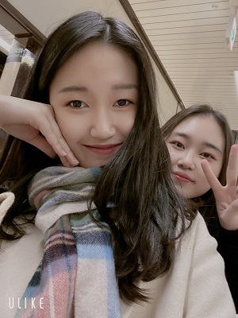

일본여행 19.12.22-24
1일차 (19.12.22.SUN)
- 비행기타고 후쿠오카로~
- 호텔에 짐 맡기고 근처 시장(?)에서 우동
- 시장에서 부엉이 카페 ㄷㄷ 캐널시티로 이동~
- 캐널시티에서 파르페랑 버블티 냠냠 공쥬리&큐리
- 코트, 목도리 GET! 저녁 하카타역에서 모츠나베냠냠
- 하카타역 전광판에서 찰칵>< 하카타역에서 야경(?)
- 체크인하고 돈키호테로 쫄레쫄레
2일차 (19.12.23.MON)
니홍 버스 ㅎㅎ 덴진 돈키호테에서 쇼핑
파르코 백화점에서 규카츠! 100엔 마트! 도라에몽 2020 캘린더 겟!! 계산원 아저씨 "쏘리쏘리"
열씨미 덴진의 지하 쇼핑하다 니홍 스벅!
후쿠오카 타워!! 모모치해변 >
저녁은 편의점 음식 라묜 ㅎㅎ 뜨끈뜨끈 족욕~
3일차 (19.12.24.TUE)
브렉퍼스트!
한큐백화점까지 쫄레쫄레~ 열일하는 사무실 / 일본 동화도 들었다
오 노.. 기대했는데.. 노맛ㅠ 마제소바ㅠ
크리스마스 먹거리 잔득..! 늦게 알았다ㅠ
지하철타고 공항으로~ 후쿠오카 공항 도착!
집으로~